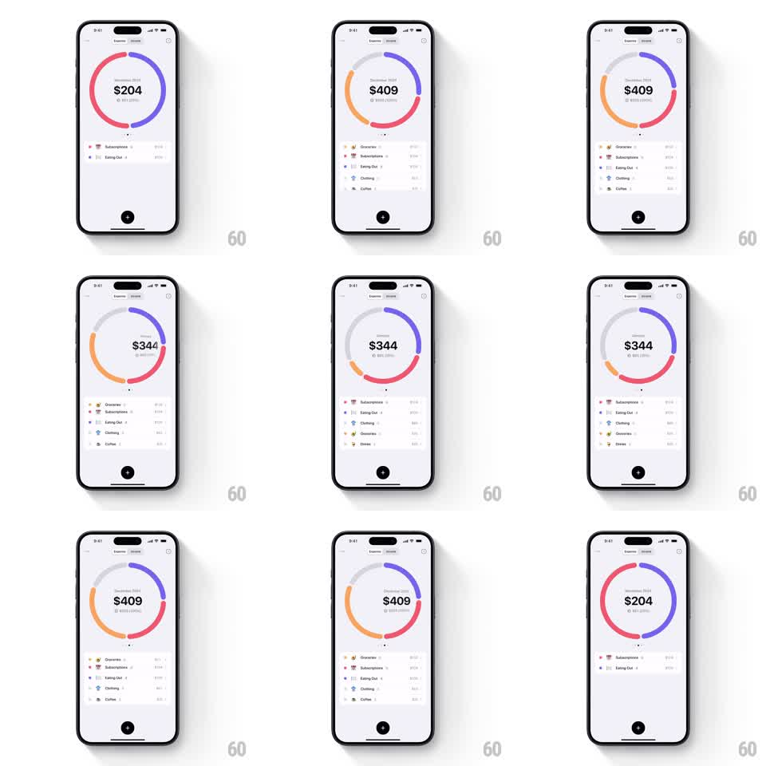

Media
Frame-by-frame

Rebuild this interaction 1:1: Five Cents' monthly expense pager - swiping horizontally slides the donut chart to the next month while its segments morph, the total counts over, and the category list restacks.

Rebuild this interaction 1:1: Five Cents' monthly expense pager - swiping horizontally slides the donut chart to the next month while its segments morph, the total counts over, and the category list restacks. ## Integration Integration: stack-agnostic spec - springs given as stiffness/damping, timed motions as duration + curve; map every value to your framework and animation library of choice. ## Scene Light finance screen: a donut chart with the month label and total spend at its center, page dots below it, and a list of expense categories under it. Months page horizontally. ## Motion spec Pattern: swipe-pager with morphing data, ~500ms settle. - Horizontal drag tracks the finger 1:1 across the whole screen; the donut translates and fades slightly with the drag. - On release past a small threshold (or with enough velocity), the current month slides out and the next slides in from the drag side (spring stiffness 180 damping 22). - During the settle, the donut's segments morph from the old month's proportions to the new ones (500ms, ease-in-out) and the total amount counts over to the new figure. - The category list restacks with a stagger (each row slides to its new rank, 60ms apart, spring stiffness 200 damping 24); page dots update on settle. ## Calibration - Segment colors stay stable per category across months - a color reshuffle breaks the morph's continuity. - The count-over lands exactly when the spring does; an early finish reads as a race. ## Reduced motion Months crossfade; segments jump to final values; list restacks without stagger. ## Don't miss - Category rows keep their identity through the restack (row re-ordering, not re-rendering). - The month label swaps at the midpoint of the settle, not at release.